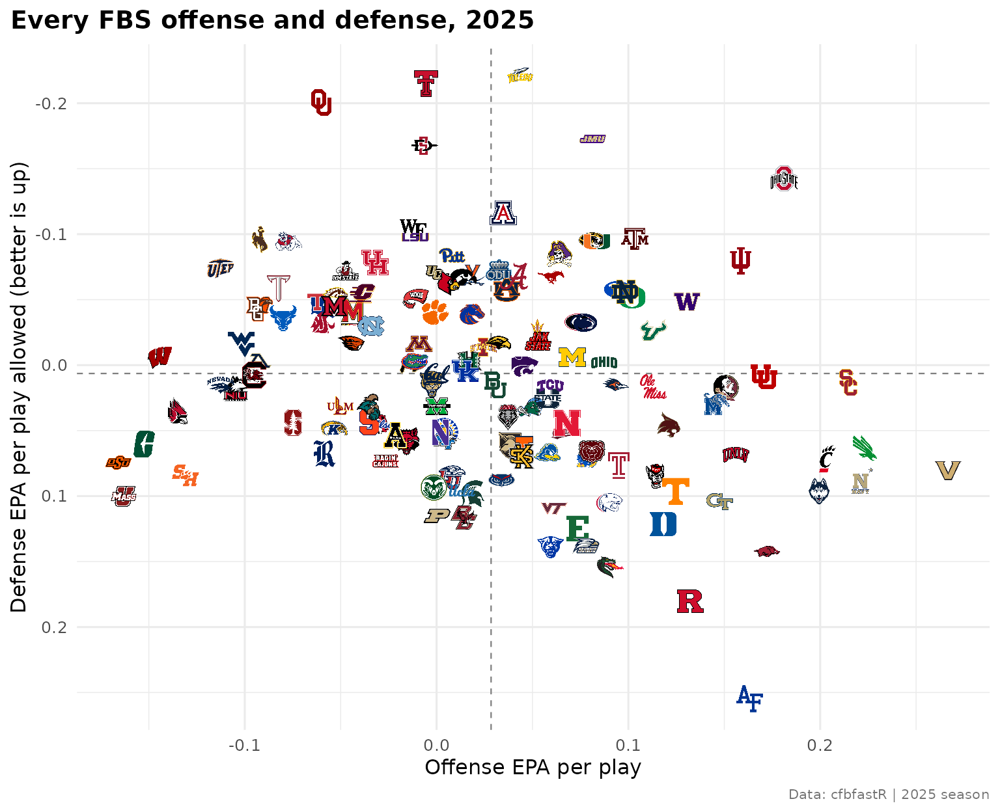
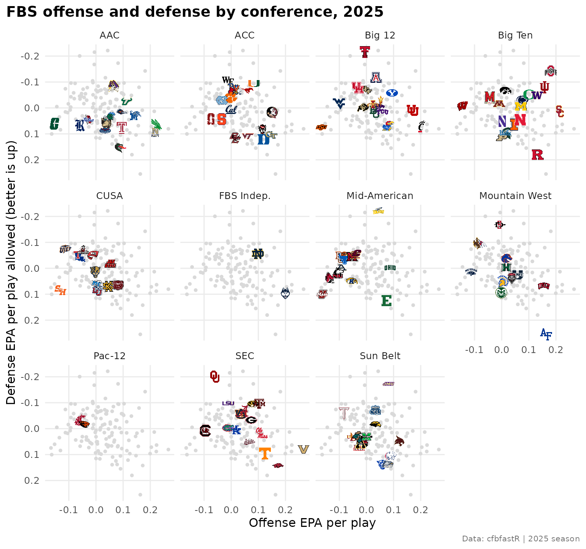
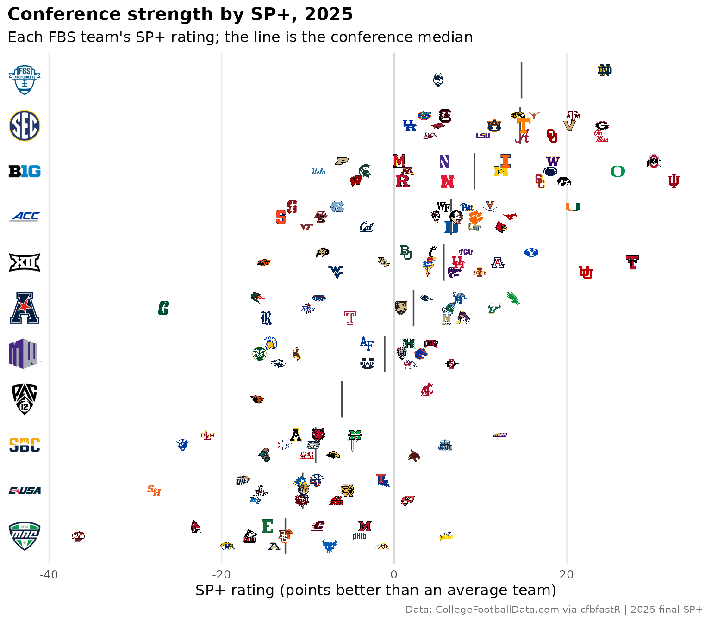
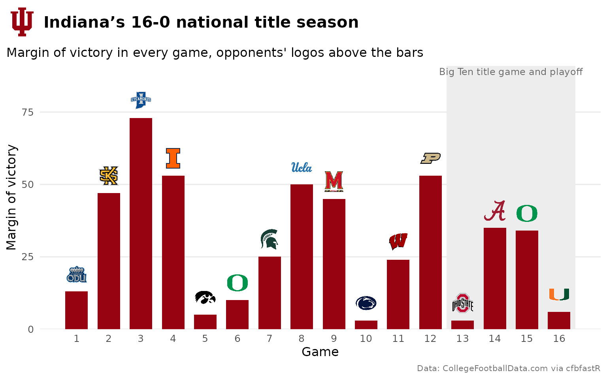
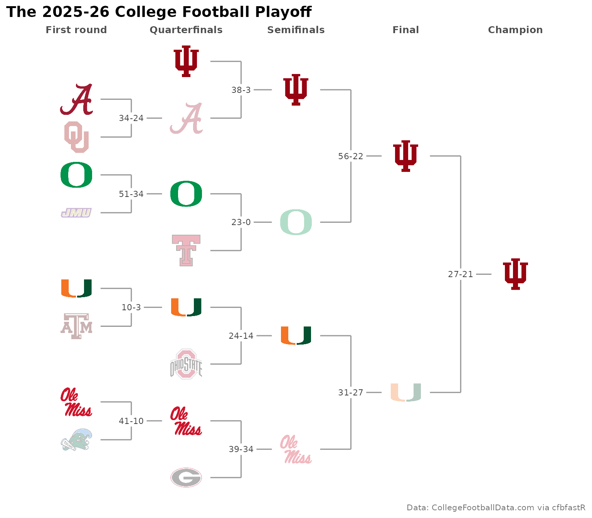
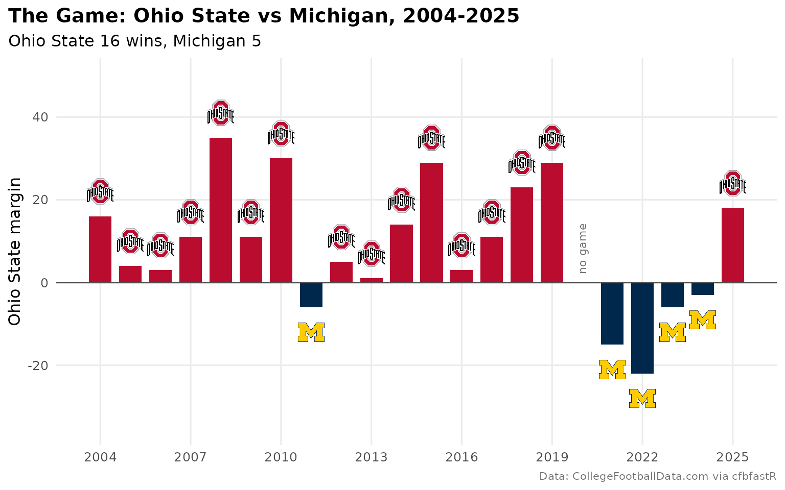
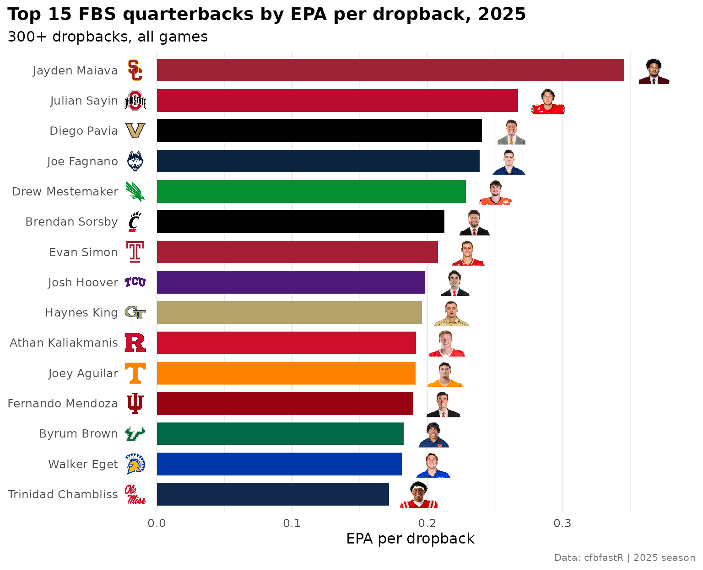
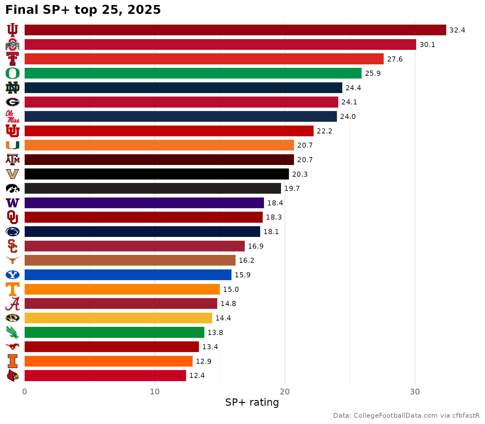
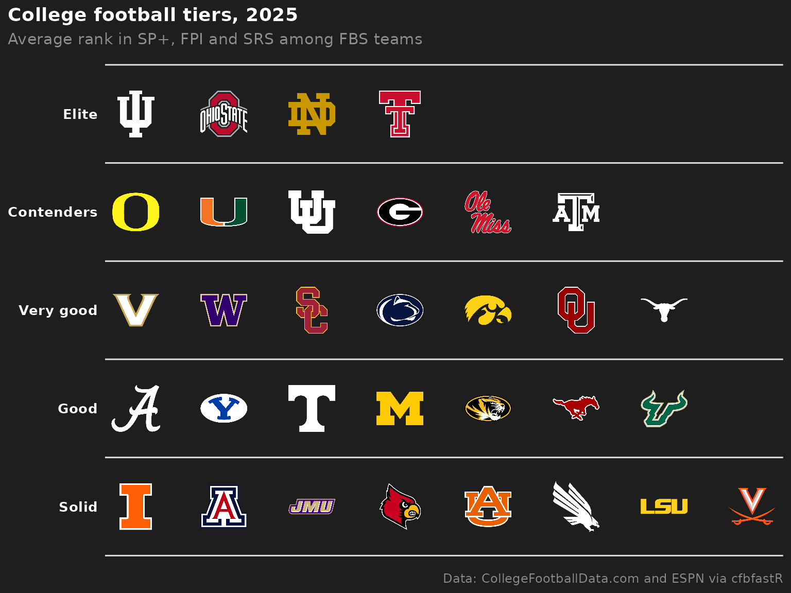

College Football Visualizations with cfbfastR and sdvplotR
Saiem Gilani


Source: vignettes/cfb-viz.Rmd
cfb-viz.RmdOn this page
Ten charts and tables from the 2025 college football season: all 136 FBS teams on one scatter, conference small multiples, conference logos on an axis, a conference standings table, the national champion’s season with a logo in the title, the College Football Playoff bracket, a rivalry across two decades, a quarterback leaderboard with headshots, a ranked bar chart with logos on the y axis and a tier list. The last section makes the first chart interactive.
College football is the league where sdvplotR’s name matching earns
its keep: the data names schools ("Ohio State",
"San José State"), and sdvplotR resolves every FBS and FCS
program, plus each conference, from those names, so the code below never
builds a lookup table.
Setup
The play-by-play comes from the SportsDataverse releases through cfbfastR and needs no
key. The schedule, ratings and series history come from the CollegeFootballData.com API,
which needs a free key. Get one at https://collegefootballdata.com/key and register it
before running the chunks that call cfbd_*() or
load_cfb_schedules():
Sys.setenv(CFBD_API_KEY = "YOUR-API-KEY-HERE")
# to keep it across sessions, add CFBD_API_KEY=YOUR-API-KEY-HERE to
# ~/.Renviron (usethis::edit_r_environ()); see ?cfbfastR::register_cfbd
library(sdvplotR)
library(ggplot2)
library(dplyr, warn.conflicts = FALSE)
library(gt)
season <- 2025
caption <- "Data: cfbfastR | 2025 season"
pbp <- cfbfastR::load_cfb_pbp(season)
schedule <- cfbfastR::load_cfb_schedules(season)
theme_set(
theme_minimal(base_size = 12) +
theme(
plot.title = element_text(face = "bold"),
plot.title.position = "plot",
plot.caption = element_text(color = "grey45", size = 8)
)
)The schedule carries each team’s division and its conference
that season. sdv_resolve() turns the
school names into team ids:
fbs <- bind_rows(
select(schedule, team = home_team, conference = home_conference, division = home_division),
select(schedule, team = away_team, conference = away_conference, division = away_division)
) |>
filter(division == "fbs") |>
distinct(team, conference) |>
mutate(
# the index keys three conferences by their short codes
conference = recode(conference, "American Athletic" = "AAC", "Conference USA" = "CUSA", "FBS Independents" = "FBS Indep."),
# "Charlotte" alone is the 49ers or the Saints; the 49ers are the FBS team
team_id = sdv_resolve(sub("^Charlotte$", "Charlotte 49ers", team), league = "cfb")
)
nrow(fbs)
#> [1] 136
count(fbs, conference, sort = TRUE)
#> # A tibble: 11 × 2
#> conference n
#> <chr> <int>
#> 1 Big Ten 18
#> 2 ACC 17
#> 3 Big 12 16
#> 4 SEC 16
#> 5 AAC 14
#> 6 Sun Belt 14
#> 7 Mid-American 13
#> 8 CUSA 12
#> 9 Mountain West 12
#> 10 FBS Indep. 2
#> 11 Pac-12 2Conferences are rows of the team index too
(sdv_teams("cfb", include_conferences = TRUE)), which holds
each school’s conference today. Checking the season’s
conferences against it shows who has moved. A tutorial on a past season
should take conferences from that season’s data:
conf_rows <- sdv_teams("cfb", include_conferences = TRUE) |>
filter(program == "conference")
fbs |>
inner_join(select(sdv_teams("cfb"), team_id, conf_today = conference_id), by = "team_id") |>
mutate(
conf_today = conf_rows$team_id[match(conf_today, conf_rows$conference_id)],
conf_2025 = coalesce(
conf_rows$team_id[match(tolower(conference), tolower(conf_rows$team_id))],
conf_rows$team_id[match(tolower(conference), tolower(conf_rows$short_name))]
)
) |>
filter(!is.na(conf_2025), conf_2025 != conf_today) |>
arrange(conf_today, team) |>
select(team, conf_2025, conf_today)
#> # A tibble: 9 × 3
#> team conf_2025 conf_today
#> <chr> <chr> <chr>
#> 1 Northern Illinois MAC Mountain West
#> 2 UTEP CUSA Mountain West
#> 3 Boise State Mountain West Pac-12
#> 4 Colorado State Mountain West Pac-12
#> 5 Fresno State Mountain West Pac-12
#> 6 San Diego State Mountain West Pac-12
#> 7 Texas State Sun Belt Pac-12
#> 8 Utah State Mountain West Pac-12
#> 9 Louisiana Tech CUSA Sun Belt1. All 136 FBS teams on one chart
Offensive EPA per play against defensive EPA per play allowed, for
every FBS team, over the full season. With this many teams the logos
have to be small: width = 0.032 makes each one 3.2% of the
panel’s width. geom_mean_lines() marks the FBS averages,
and the defense axis is reversed so the best teams sit top right.
scrimmage <- pbp |>
filter(pass == 1 | rush == 1, !is.na(EPA))
offense <- scrimmage |>
group_by(team = pos_team) |>
summarise(off_epa = mean(EPA), off_sr = mean(epa_success), .groups = "drop")
defense <- scrimmage |>
group_by(team = def_pos_team) |>
summarise(def_epa = mean(EPA), .groups = "drop")
ratings <- fbs |>
inner_join(offense, by = "team") |>
inner_join(defense, by = "team") |>
mutate(net_epa = off_epa - def_epa)
ggplot(ratings, aes(x = off_epa, y = def_epa)) +
geom_mean_lines(aes(x0 = off_epa, y0 = def_epa), color = "grey50", linewidth = 0.4) +
geom_sdv_logos(aes(team = team_id), league = "cfb", width = 0.032) +
scale_y_reverse() +
labs(
title = "Every FBS offense and defense, 2025",
x = "Offense EPA per play",
y = "Defense EPA per play allowed (better is up)",
caption = caption
)
2. Conference small multiples
The same data, one panel per conference: every FBS team as a grey dot
behind, the conference’s own teams as logos. The grey layer gets a copy
of the data without the conference column, so
facet_wrap() repeats it in every panel.
ggplot(ratings, aes(x = off_epa, y = def_epa)) +
geom_point(data = select(ratings, -conference), color = "grey85", size = 1) +
geom_sdv_logos(aes(team = team_id), league = "cfb", width = 0.1) +
scale_y_reverse() +
facet_wrap(~conference, ncol = 4) +
labs(
title = "FBS offense and defense by conference, 2025",
x = "Offense EPA per play",
y = "Defense EPA per play allowed (better is up)",
caption = caption
) +
theme(panel.grid.minor = element_blank())
3. Conference logos on an axis
How strong is each conference top to bottom? Each team’s SP+ rating
(cfbfastR::cfbd_ratings_sp()) is a logo on its conference’s
row, with a line at the conference median. The rows are labelled with
the conference names, and scale_y_sdv() with
theme_y_sdv() draws those names as conference logos:
sdvplotR keeps the conferences’ marks alongside the teams’.
sp <- cfbfastR::cfbd_ratings_sp(year = season) |>
select(team, sp = rating, sp_rank = ranking)
by_conf <- ratings |>
inner_join(sp, by = "team") |>
group_by(conference) |>
mutate(median_sp = median(sp)) |>
# three staggered rows per conference, so neighboring logos overlap less
arrange(sp, team, .by_group = TRUE) |>
mutate(offset = (row_number() %% 3 - 1) * 0.22) |>
ungroup() |>
mutate(conference = reorder(conference, median_sp))
medians <- distinct(by_conf, conference, median_sp)
ggplot(by_conf, aes(x = sp, y = conference)) +
# the discrete layer that sets the rows; the layers below place logos and
# medians between them in numbers (row 1, row 2, ...)
geom_blank() +
geom_vline(xintercept = 0, color = "grey70", linewidth = 0.3) +
geom_segment(
aes(x = median_sp, xend = median_sp, y = as.numeric(conference) - 0.4, yend = as.numeric(conference) + 0.4),
data = medians, color = "grey30", linewidth = 0.6
) +
geom_sdv_logos(aes(y = as.numeric(conference) + offset, team = team_id), league = "cfb", height = 0.03) +
scale_y_sdv(league = "cfb", size = 28) +
labs(
title = "Conference strength by SP+, 2025",
subtitle = "Each FBS team's SP+ rating; the line is the conference median",
x = "SP+ rating (points better than an average team)",
y = NULL,
caption = "Data: CollegeFootballData.com via cfbfastR | 2025 final SP+"
) +
theme_y_sdv() +
theme(panel.grid.major.y = element_blank(), panel.grid.minor = element_blank())
4. A conference standings table
SEC records built from the schedule: conference games and all
regular-season games, before the title game and bowls.
gt_sdv_logos() turns the abbreviation column into logos,
gt_fmt_tally() writes each pair of win and loss columns as
one record, and gt_theme_athletic() styles the table. The
last column is each team’s real postseason: the bowl or playoff round
from the schedule’s notes.
regular <- schedule |>
filter(completed, season_type == "regular", week <= 14)
sides <- bind_rows(
regular |> transmute(team = home_team, conf = home_conference, conference_game, pf = home_points, pa = away_points),
regular |> transmute(team = away_team, conf = away_conference, conference_game, pf = away_points, pa = home_points)
) |>
mutate(win = pf > pa)
# Title games and bowls, one row per team per game, in date order
late <- schedule |>
filter(completed, season_type == "postseason" | week > 14) |>
arrange(start_date)
postseason <- bind_rows(
transmute(late, start_date, team = home_team, won = home_points > away_points, notes),
transmute(late, start_date, team = away_team, won = away_points > home_points, notes)
) |>
arrange(start_date) |>
mutate(
# "College Football Playoff Quarterfinal at the Allstate Sugar Bowl" -> "CFP Quarterfinal"
game = sub("^College Football Playoff (.*?)( Game| at the .*| Presented by .*)?$", "CFP \\1", notes, perl = TRUE),
game = paste(if_else(won, "W", "L"), coalesce(game, "conference title game"))
) |>
group_by(team) |>
summarise(postseason = paste(game, collapse = ", "), .groups = "drop")
sec <- sides |>
filter(conf == "SEC") |>
group_by(team) |>
summarise(
conf_w = sum(win & conference_game),
conf_l = sum(!win & conference_game),
w = sum(win),
l = sum(!win),
pf = sum(pf),
pa = sum(pa),
.groups = "drop"
) |>
left_join(sp, by = "team") |>
left_join(postseason, by = "team") |>
# conference record, then overall record: not the SEC's tiebreakers
arrange(desc(conf_w), desc(w), desc(sp), team) |>
mutate(logo = sdv_resolve(team, league = "cfb")) |>
select(logo, team, conf_w, conf_l, w, l, pf, pa, sp, postseason)
sec |>
gt() |>
gt_sdv_logos(columns = "logo", league = "cfb", height = 24) |>
gt_fmt_tally(columns = c(conf_w, conf_l), label = "SEC") |>
gt_fmt_tally(columns = c(w, l), label = "Overall") |>
fmt_number(columns = "sp", decimals = 1) |>
sub_missing(columns = "postseason", missing_text = "") |>
cols_align(align = "left", columns = "postseason") |>
data_color(columns = "sp", palette = c("#f7f7f7", "#1b7837")) |>
cols_label(logo = "", team = "", pf = "PF", pa = "PA", sp = "SP+", postseason = "Postseason") |>
tab_header(title = "SEC standings, 2025", subtitle = "Regular season, before the SEC title game") |>
tab_source_note("Data: CollegeFootballData.com via cfbfastR") |>
gt_theme_athletic(density = "compact")| SEC standings, 2025 | |||||||
| Regular season, before the SEC title game | |||||||
| SEC | Overall | PF | PA | SP+ | Postseason | ||
|---|---|---|---|---|---|---|---|
 |
Georgia | 7-1 | 11-1 | 387 | 200 | 24.1 | W SEC Championship, L CFP Quarterfinal |
 |
Ole Miss | 7-1 | 11-1 | 447 | 241 | 24.0 | W CFP First Round, W CFP Quarterfinal, L CFP Semifinal |
 |
Texas A&M | 7-1 | 11-1 | 436 | 263 | 20.7 | L CFP First Round |
 |
Alabama | 7-1 | 10-2 | 399 | 198 | 14.8 | L SEC Championship, W CFP First Round, L CFP Quarterfinal |
 |
Vanderbilt | 6-2 | 10-2 | 473 | 263 | 20.3 | L ReliaQuest Bowl |
 |
Oklahoma | 6-2 | 10-2 | 317 | 167 | 18.3 | L CFP First Round |
 |
Texas | 6-2 | 9-3 | 355 | 237 | 16.2 | W Cheez-It Citrus Bowl |
 |
Tennessee | 4-4 | 8-4 | 489 | 345 | 15.0 | L Liberty Mutual Music City Bowl |
 |
Missouri | 4-4 | 8-4 | 386 | 233 | 14.4 | L TaxSlayer Gator Bowl |
 |
LSU | 3-5 | 7-5 | 262 | 220 | 10.3 | L Kinder's Texas Bowl |
 |
Kentucky | 2-6 | 5-7 | 276 | 317 | 1.8 | |
 |
Florida | 2-6 | 4-8 | 259 | 288 | 3.5 | |
 |
Auburn | 1-7 | 5-7 | 321 | 248 | 11.6 | |
 |
Mississippi State | 1-7 | 5-7 | 366 | 350 | 4.1 | L Duke's Mayo Bowl |
 |
South Carolina | 1-7 | 4-8 | 272 | 265 | 5.9 | |
 |
Arkansas | 0-8 | 2-10 | 395 | 406 | 5.1 | |
| Data: CollegeFootballData.com via cfbfastR | |||||||
5. The national champion’s season, with a logo in the title
Indiana won every game. Each bar is one game’s margin in Indiana’s
primary color, the opponent’s logo above it, and
ggtitle_image() puts the Indiana logo beside the title. The
shaded games are the Big Ten title game and the playoff.
champion <- schedule |>
filter(grepl("National Championship", notes)) |>
mutate(winner = if_else(home_points > away_points, home_team, away_team)) |>
pull(winner)
games <- schedule |>
filter(completed, home_team == champion | away_team == champion) |>
arrange(start_date) |>
mutate(
game = row_number(),
home = home_team == champion,
opponent = if_else(home, away_team, home_team),
margin = if_else(home, home_points - away_points, away_points - home_points),
title_run = season_type == "postseason" | week > 14
)
record <- sprintf("%d-%d", sum(games$margin > 0), sum(games$margin < 0))
run_start <- min(games$game[games$title_run])
ggplot(games, aes(x = game, y = margin)) +
annotate(
"rect", xmin = run_start - 0.5, xmax = max(games$game) + 0.5, ymin = -Inf, ymax = Inf,
fill = "grey93"
) +
annotate(
"text", x = (run_start + max(games$game)) / 2, y = max(games$margin) + 16,
label = "Big Ten title game and playoff", size = 3.2, color = "grey40"
) +
geom_col(fill = sdv_team_colors("cfb", champion), width = 0.7) +
geom_sdv_logos(aes(y = margin + 6, team = opponent), league = "cfb", height = 0.085) +
scale_x_continuous(breaks = games$game) +
scale_y_continuous(limits = c(0, max(games$margin) + 18), expand = c(0, 0)) +
ggtitle_image(
title_image = champion,
title = sprintf("%s's %s national title season", champion, record),
subtitle = "Margin of victory in every game, opponents' logos above the bars",
image_height = 30,
league = "cfb"
) +
labs(x = "Game", y = "Margin of victory", caption = "Data: CollegeFootballData.com via cfbfastR") +
theme_title_image(size = 15, face = "bold") +
theme(panel.grid.major.x = element_blank(), panel.grid.minor = element_blank())
6. The College Football Playoff bracket
The 11 playoff games, from the schedule’s notes, drawn
as a bracket. Each column is a round; the team that advanced is drawn
solid and the team that lost faded, with the score where the two meet.
Teams with a first-round bye enter in the quarterfinal column. The
layout walks back from the champion: a team’s slot in one round sits
between the two teams of the game it won the round before.
rounds <- c("First round", "Quarterfinals", "Semifinals", "Final", "Champion")
cfp <- schedule |>
filter(grepl("College Football Playoff", notes)) |>
mutate(
round = case_when(
grepl("First Round", notes) ~ 1,
grepl("Quarterfinal", notes) ~ 2,
grepl("Semifinal", notes) ~ 3,
grepl("Championship", notes) ~ 4
),
winner = if_else(home_points > away_points, home_team, away_team),
loser = if_else(home_points > away_points, away_team, home_team),
score = paste0(pmax(home_points, away_points), "-", pmin(home_points, away_points))
)
# A team's slot in round r: a leaf if it played no game in round r - 1 (a
# bye, or the first round), otherwise centered on that game's two teams
slots <- data.frame()
edges <- data.frame()
leaf <- 0
place <- function(team, r) {
prev <- cfp[cfp$round == r - 1 & cfp$winner == team, ]
if (nrow(prev) == 0) {
leaf <<- leaf + 1
y <- leaf
} else {
ys <- c(place(prev$winner, r - 1), place(prev$loser, r - 1))
y <- mean(ys)
edges <<- rbind(edges, data.frame(x = r - 1, y1 = ys[1], y2 = ys[2], y = y, score = prev$score))
}
lost <- any(cfp$round == r & cfp$loser == team)
slots <<- rbind(slots, data.frame(team = team, x = r, y = y, lost = lost))
y
}
invisible(place(cfp$winner[cfp$round == 4], 5))
slots$team_id <- sdv_resolve(slots$team, league = "cfb")
ggplot() +
# each game: from both teams to the round's midline, then on to the winner
geom_segment(aes(x = x + 0.22, xend = x + 0.5, y = y1, yend = y1), data = edges, color = "grey60") +
geom_segment(aes(x = x + 0.22, xend = x + 0.5, y = y2, yend = y2), data = edges, color = "grey60") +
geom_segment(aes(x = x + 0.5, xend = x + 0.5, y = y1, yend = y2), data = edges, color = "grey60") +
geom_segment(aes(x = x + 0.5, xend = x + 0.78, y = y, yend = y), data = edges, color = "grey60") +
geom_label(
aes(x = x + 0.5, y = y, label = score),
data = edges, size = 3, linewidth = 0, fill = "white", color = "grey25"
) +
geom_sdv_logos(
aes(x = x, y = y, team = team_id, alpha = if_else(lost, 0.3, 1)),
data = slots, league = "cfb", height = 0.075
) +
scale_alpha_identity() +
scale_x_continuous(breaks = 1:5, labels = rounds, position = "top", limits = c(0.6, 5.4)) +
scale_y_reverse() +
labs(
title = "The 2025-26 College Football Playoff",
x = NULL,
y = NULL,
caption = "Data: CollegeFootballData.com via cfbfastR"
) +
theme(panel.grid = element_blank(), axis.text.y = element_blank(), axis.text.x = element_text(face = "bold"))
7. A rivalry, season by season
Ohio State against Michigan since 2004, from one CFBD call
(cfbfastR::cfbd_team_matchup()). Each bar is the margin
from Ohio State’s side, colored for the winner, with the winner’s logo
at the end of the bar. There was no game in 2020.
series <- cfbfastR::cfbd_team_matchup("Ohio State", "Michigan", min_year = 2004, max_year = season) |>
filter(!is.na(home_score)) |>
mutate(
osu_margin = if_else(home_team == "Ohio State", home_score - away_score, away_score - home_score),
winner_id = sdv_resolve(winner, league = "cfb"),
tip = osu_margin + if_else(osu_margin > 0, 6, -6)
)
ggplot(series, aes(x = season, y = osu_margin)) +
geom_col(aes(fill = winner_id), width = 0.75) +
geom_hline(yintercept = 0, color = "grey30") +
geom_sdv_logos(aes(y = tip, team = winner_id), league = "cfb", height = 0.075) +
annotate("text", x = 2020, y = 2, label = "no game", angle = 90, hjust = 0, size = 3, color = "grey45") +
scale_fill_sdv(league = "cfb") +
scale_x_continuous(breaks = seq(2004, season, 3)) +
scale_y_continuous(limits = c(-35, 50)) +
labs(
title = sprintf("The Game: Ohio State vs Michigan, 2004-%d", season),
subtitle = sprintf(
"Ohio State %d wins, Michigan %d",
sum(series$osu_margin > 0), sum(series$osu_margin < 0)
),
x = NULL,
y = "Ohio State margin",
caption = "Data: CollegeFootballData.com via cfbfastR"
) +
theme(legend.position = "none", panel.grid.minor = element_blank())
8. A quarterback leaderboard with headshots
cfbfastR’s play-by-play names the passer on each dropback by role
(completion_player_id, incompletion_player_id,
…); the first that is set is the quarterback’s ESPN athlete id, which is
what geom_sdv_headshots() takes for college players. FBS
quarterbacks only, 300 or more dropbacks, all games.
qbs <- pbp |>
filter(pass == 1, !is.na(EPA)) |>
mutate(
qb_id = coalesce(completion_player_id, incompletion_player_id, interception_thrown_player_id, sack_taken_player_id),
qb = coalesce(completion_player, incompletion_player, interception_thrown_player, sack_taken_player)
) |>
filter(!is.na(qb_id), pos_team %in% fbs$team) |>
arrange(game_id, id_play) |>
group_by(qb_id) |>
summarise(
qb = last(qb),
team = last(pos_team),
dropbacks = n(),
epa = mean(EPA),
.groups = "drop"
) |>
filter(dropbacks >= 300) |>
arrange(desc(epa), qb_id) |>
head(15) |>
mutate(team_id = sdv_resolve(team, league = "cfb"), qb_id = as.character(qb_id))
ggplot(qbs, aes(x = epa, y = reorder(qb, epa))) +
geom_col(aes(fill = team_id), width = 0.75) +
geom_sdv_logos(aes(x = -0.016, team = team_id), league = "cfb", height = 0.05) +
geom_sdv_headshots(aes(x = epa + 0.022, player_id = qb_id), league = "cfb", height = 0.06) +
scale_fill_sdv(league = "cfb") +
scale_x_continuous(breaks = seq(0, 0.4, 0.1), expand = expansion(mult = c(0.02, 0.08))) +
labs(
title = "Top 15 FBS quarterbacks by EPA per dropback, 2025",
subtitle = "300+ dropbacks, all games",
x = "EPA per dropback",
y = NULL,
caption = caption
) +
theme(legend.position = "none", panel.grid.major.y = element_blank())
9. A ranked bar chart with logos on the y axis
The final SP+ top 25. The bars use the teams’ colors, and with the
team abbreviations on the y axis, scale_y_sdv() plus
theme_y_sdv() replaces each with its logo.
top25 <- sp |>
inner_join(fbs, by = "team") |>
arrange(sp_rank, team) |>
head(25) |>
mutate(team_id = factor(team_id, levels = rev(team_id)))
ggplot(top25, aes(x = sp, y = team_id)) +
geom_col(aes(fill = team_id), width = 0.75) +
geom_text(aes(label = sprintf("%.1f", sp)), hjust = -0.2, size = 3) +
scale_fill_sdv(league = "cfb") +
scale_y_sdv(league = "cfb", size = 18) +
scale_x_continuous(expand = expansion(mult = c(0, 0.08))) +
labs(
title = "Final SP+ top 25, 2025",
x = "SP+ rating",
y = NULL,
caption = "Data: CollegeFootballData.com via cfbfastR"
) +
theme_y_sdv() +
theme(legend.position = "none", panel.grid.major.y = element_blank())
10. Tiers of a ranking you compute
A composite ranking: the average of each FBS team’s rank in three
systems, SP+, ESPN’s FPI (cfbfastR::espn_ratings_fpi()) and
the Simple Rating System (cfbfastR::cfbd_ratings_srs()).
The top 32 go into five tiers with sdv_team_tiers(). FPI
comes keyed by ESPN abbreviation, which sdv_resolve() turns
into a team id.
fpi <- cfbfastR::espn_ratings_fpi(year = season) |>
transmute(team_id = suppressWarnings(sdv_resolve(team_abbreviation, league = "cfb")), fpi = as.numeric(fpi))
srs <- cfbfastR::cfbd_ratings_srs(year = season) |>
select(team, srs = rating)
composite <- fbs |>
inner_join(sp, by = "team") |>
inner_join(srs, by = "team") |>
inner_join(fpi, by = "team_id") |>
mutate(score = (rank(-sp) + rank(-fpi) + rank(-srs)) / 3) |>
arrange(score, team_id) |>
head(32)
sizes <- c(4, 6, 7, 7, 8) # teams per tier, top to bottom
composite$tier_no <- rep(seq_along(sizes), sizes)
sdv_team_tiers(
select(composite, tier_no, team = team_id),
league = "cfb",
title = "College football tiers, 2025",
subtitle = "Average rank in SP+, FPI and SRS among FBS teams",
caption = "Data: CollegeFootballData.com and ESPN via cfbfastR",
alpha = 1,
tier_desc = c(
"1" = "Elite",
"2" = "Contenders",
"3" = "Very good",
"4" = "Good",
"5" = "Solid"
)
)
11. Make it interactive
The 136-team scatter from section 1 is crowded in the middle, which
is where an interactive chart helps most. This one is native plotly: a
transparent marker under each team carries the hover text, and
add_sdv_logos() places the logos as layout images at the
same coordinates. Hover a logo for the school, its 2025 conference and
its EPA per play on each side; drag a box to zoom into the cluster and
double-click to zoom back out. plotly loads each logo from its URL, so
136 of them add almost nothing to the page.
pad <- 0.03
fbs_hover <- ratings |>
mutate(tip = sprintf(
"<b>%s</b> (%s)<br>Offense: %+.3f EPA/play<br>Defense: %+.3f EPA/play allowed<br>Net: %+.3f",
team, conference, off_epa, def_epa, net_epa
))
avg_line <- list(color = "grey", dash = "dash", width = 1)
plotly::plot_ly(
fbs_hover, x = ~off_epa, y = ~def_epa, type = "scatter", mode = "markers",
marker = list(size = 14, opacity = 0), text = ~tip, hoverinfo = "text"
) |>
plotly::layout(
title = list(text = "Every FBS offense and defense, 2025", x = 0.02),
xaxis = list(title = "Offense EPA per play", range = range(fbs_hover$off_epa) + c(-pad, pad), zeroline = FALSE),
yaxis = list(
title = "Defense EPA per play allowed (better is up)", zeroline = FALSE,
range = rev(range(fbs_hover$def_epa) + c(-pad, pad))
),
shapes = list(
list(type = "line", x0 = mean(fbs_hover$off_epa), x1 = mean(fbs_hover$off_epa), yref = "paper", y0 = 0, y1 = 1, line = avg_line),
list(type = "line", y0 = mean(fbs_hover$def_epa), y1 = mean(fbs_hover$def_epa), xref = "paper", x0 = 0, x1 = 1, line = avg_line)
)
) |>
add_sdv_logos(fbs_hover$off_epa, fbs_hover$def_epa, fbs_hover$team_id, "cfb", size = 0.04)A range given high to low reverses the axis, so good
defenses sit at the top as in the static chart. Interactive charts covers plotly,
ggiraph and leaflet, and the CFB
stadium map recipe puts the same logos on a map of the stadiums with
addSdvLogoMarkers().
Next steps
-
cfbfastR
documents the play-by-play columns and every
cfbd_*()endpoint used here. -
sdv_surface("cfb", team)draws a college field in a team’s colors; the NFL tutorial puts plays on one. - cfbseedR applies conference tiebreakers and simulates the playoff field.
Related SportsDataverse packages
- sdvplot - the Python plotting package
- sdvplot-js - the JavaScript / TypeScript plotting packages
- cfbfastR - college football
- hoopR - men’s basketball
- wehoop - women’s basketball
- baseballr - baseball
- fastRhockey - hockey
- oddsapiR - betting odds
- sportyR - playing surfaces
- sportsdataverse-py - the Python package
- sportsdataverse-R - the R meta-package